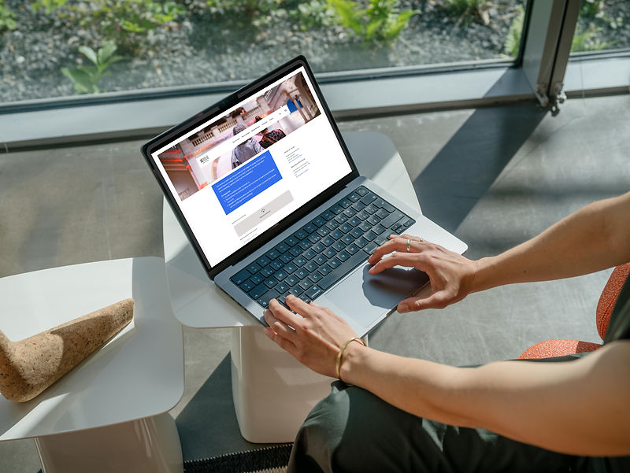
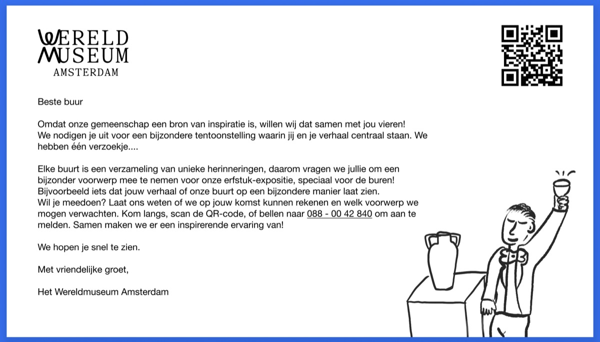
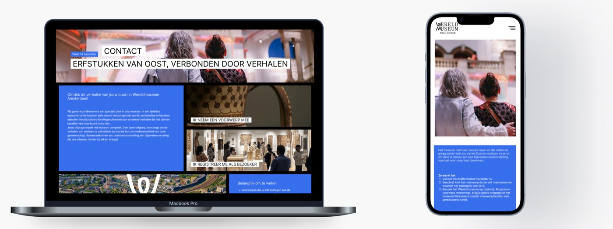
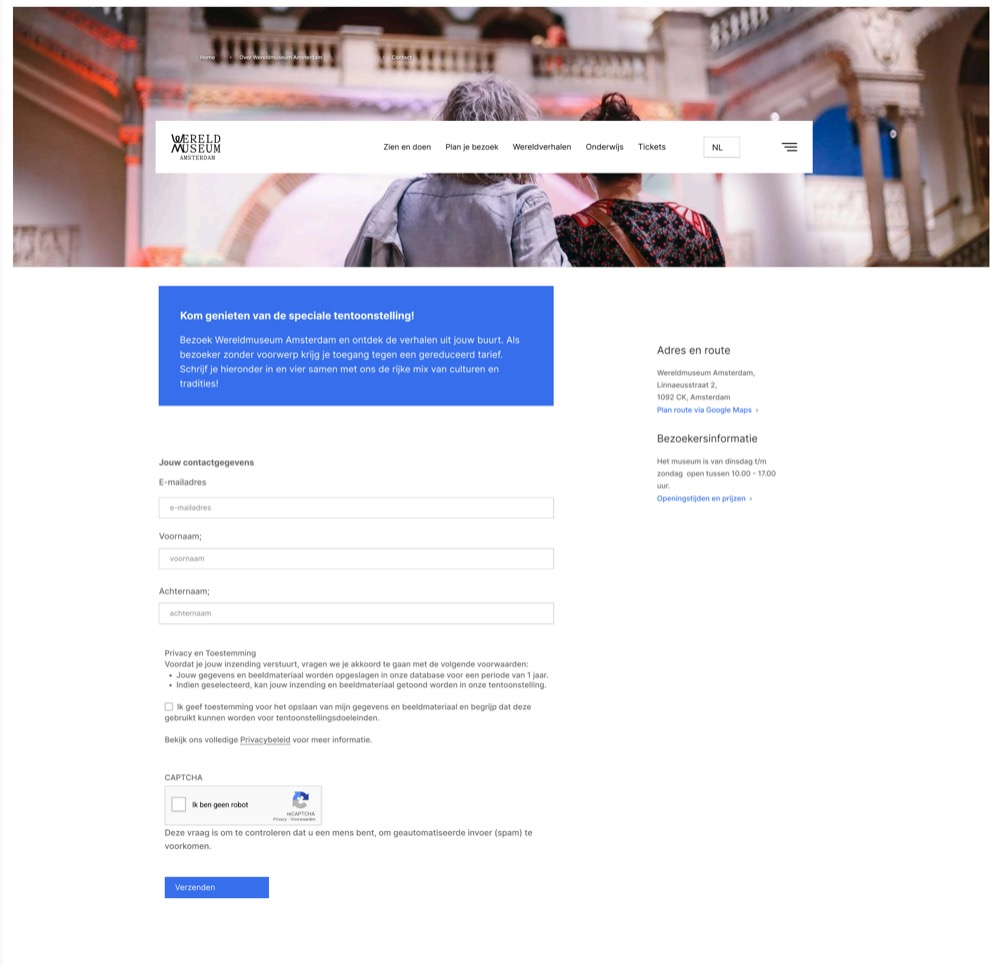

Service Design — 01 Overview
Wereldmuseum Amsterdam
A concept inviting local residents to share their personal stories, heritage, and culture through a dedicated Neighborhood Stories Exhibition.
My contribution — team project
- Did
- Research, usability testing, design, and concept development for the "Neighborhood Stories" exhibition.
- Already decided
- The client (Wereldmuseum Amsterdam) and the challenge — reconnecting with local residents after the museum's rebrand — were set as part of the assignment.

Design challenge
How can we add a new experience to the Wereldmuseum for local residents to share their cultural background, fostering a more positive experience and strengthening their connection to the neighborhood?
Research
My team and I identified the key challenges through discussions with the client and additional research, visualizing the underlying causes with the Fishbone Method.
Research methods: interviews, observations, trend analysis.
Insights
- Pandemic impact — visitor numbers dropped significantly during COVID-19 and remain below pre-2019 levels, while larger museums recovered faster, suggesting a structural issue in regaining visitors.
- Brand awareness — the museum rebranded from Tropenmuseum to Wereldmuseum on October 4, 2023, to emphasize inclusivity and global focus, but poor communication means many still associate it with its old name.
- Spatial layout — the museum's intentionally open layout leaves visitors unguided, which can cause confusion compared to museums with more intuitive navigation.
One resident we spoke to put the opportunity plainly: a museum that made space for the neighborhood's own stories would feel far more relevant to them than one that didn't. Neighborhood-level data backed that up: the surrounding Dapperbuurt, Oosterparkbuurt, and Kazernebuurt are home to roughly 25,000 residents, 41.8% with a non-European background, with 25–45 year-olds the largest age group — a community whose stories weren't represented anywhere in the museum.
Proposition: “Neighborhood Stories”
We proposed a temporary exhibition where local residents contribute personal artifacts and stories representing their cultural heritage — highlighting the diversity of the surrounding community and fostering a sense of belonging.
- Invitations personalized for local residents, delivered as postcards with a QR code for participation.
- User-generated content shared on social media to amplify visibility and engagement.
- A welcoming launch event with cultural tastings and storytelling.
Four principles guided the service design: co-creation with residents rather than for them, empathy and acknowledgment throughout, two clearly separated visitor routes depending on whether someone was contributing an object or just attending, and aftercare once the exhibition closed.
Prototype overview
Physical invitation — a postcard design that's easy to distribute and creates a personal connection, with a QR code directing recipients to a dedicated landing page.

Digital landing page — designed for two distinct audiences with clear calls to action: visitors who wish to contribute an artifact can access a registration form, while those who simply want to attend can register separately.

Registration forms — a visitor form for attendees at a reduced entry fee, and an artefact form requiring an image and short description so the museum can assess fit before the exhibition. Both include clear privacy terms.

Testing
Usability testing was carried out as part of this project. [Detailed testing methodology and findings for this stage weren't preserved from the original project files.]
Outcome
The postcard invitation, landing page, and registration forms were delivered as the final "Neighborhood Stories" prototype for Wereldmuseum Amsterdam, grounded in the four service-design principles the research surfaced. This was a team project completed as part of my studies; I don't have post-handover deployment metrics to report here.
Reflection
"Aftercare" was the principle that came last and mattered most. It's easy to design a warm invitation into a museum; it's easy to overlook what happens to that relationship once the exhibition closes and the postcards stop. Treating the ending as part of the service, not an afterthought, was the biggest shift in how I thought about this project.